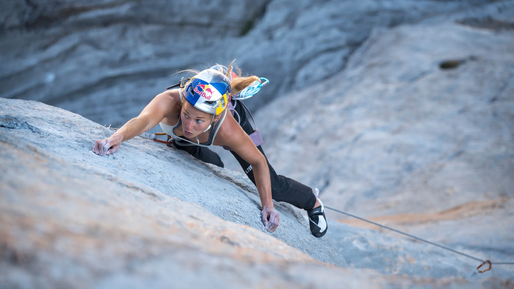
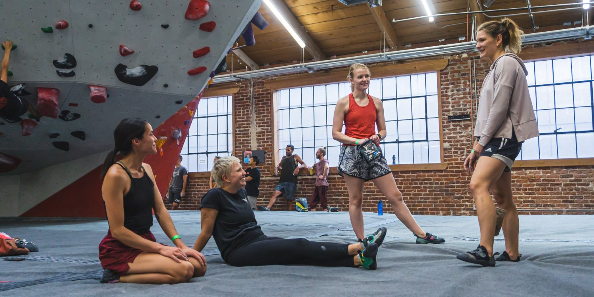

La escalada, una disciplina desafiante que combina fuerza, resistencia y destreza mental, ha sido tradicionalmente dominada por hombres. Sin embargo, en las últimas décadas, las mujeres han irrumpido en esta comunidad vertical con pasión, determinación y un enfoque único. Su presencia ha transformado no solo el panorama deportivo, sino también la percepción de género dentro de esta subcultura de la aventura y el riesgo.

La escalada gana cada vez más aficionadas.
A medida que las mujeres conquistan rutas difíciles y desafían los límites de la resistencia humana, están derribando estereotipos arraigados. Han demostrado que la escalada no es solo una cuestión de fuerza bruta, sino también de técnica refinada y perseverancia inquebrantable. Este avance en la igualdad de género dentro del deporte no solo inspira a otras mujeres a participar, sino que también desafía a la comunidad a redefinir sus percepciones sobre lo que es posible en la escalada.
Comunidad y apoyo: creando espacios inclusivos
La creación de espacios inclusivos y comunidades de escalada solidarias es fundamental para el éxito continuo de las mujeres en este deporte. Grupos de mujeres escaladoras se han formado en todo el mundo, proporcionando un lugar de apoyo, mentoría y compañerismo. Estos entornos fomentan el crecimiento personal, el aprendizaje compartido y la celebración de los logros individuales y colectivos, fortaleciendo así la presencia y la influencia de las mujeres en la escalada.
Como mujer, entendemos que puede ser para vos un deporte en el cual no te sientas del todo cómoda, por eso queremos invitarte a que pases por nuestro foro, donde encontrarás preguntas, respuestas y debates entre la comunidad escaladora de mujeres.

Comunidad de escaladora: la creación de espacios inclusivos fomenta que cada vez más mujeres se acerquen al deporte.